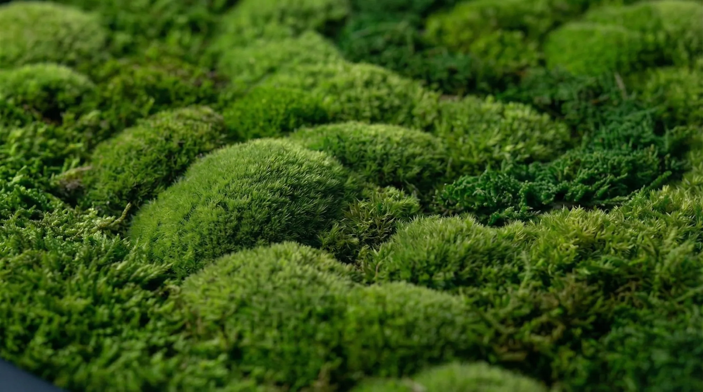

Founder · Creative Director
Ana Silva
“I am interested in the moment natural material stops feeling ornamental and begins to hold the room.”
Ana founded MOSU from a desire to make interiors feel more grounded, tactile and alive. Her work moves between botanical design, sculpture and the discipline of composing space.
Each MOSU piece begins with observation: of proportion, light, architecture and the uneven beauty already present in natural material. The result is made by hand and allowed to retain its individuality.
Work with the studioThe point of view
Organic.
Not ornamental.
MOSU does not attempt to perfect nature. The studio preserves its variation—softness beside structure, restraint beside abundance.

Designed with intention.
Finished by hand.